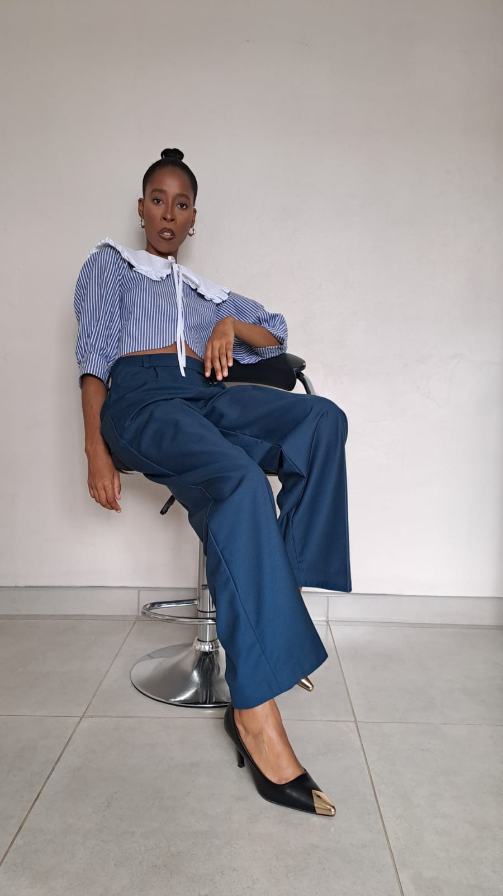

Jane.M Atelier, Maseru, Lesotho
Meet the designer
behind Jane.M.
Meet Liteboho Mokhethi, the qualified fashion designer and founder of Jane.M Atelier in Maseru, Lesotho, with South African fashion-house experience and 19K+ YouTube subscribers.
Discuss my look
Liteboho Mokhethi is the founder and head designer behind Jane.M Atelier. Her work brings a considered approach to made-to-measure fashion, from the first design conversation to pattern development, fitting and finishing.
She holds a Diploma in Fashion Design from Vaal University of Technology and a Diploma in Business Management from the National University of Lesotho. Her professional experience includes pattern drafting, prototyping, grading, quality control, fit testing, pattern development from illustrations and fabric cutting.
Before founding Jane.M Atelier, Liteboho worked as an Assistant Designer at South African fashion house Quiteria and George, followed by a Head Designer role at None Basic Army. That background informs the studio’s approach to silhouette, pattern precision and fit.
Liteboho also shares fashion education through JaneM TV, a YouTube channel with more than 19,000 subscribers. She uses digital content and occasional corsetry masterclasses to make design knowledge, construction and fit more accessible to a wider audience.
At Jane.M, Liteboho works with each client’s occasion, comfort, references and personal style to develop a custom piece that feels intentional and distinct.
Free personal styling
Not sure what to wear?
Use the free Jane.M Style Studio to plan outfits around clothes you already own. No purchase, booking or sign-up is required.
Your next move